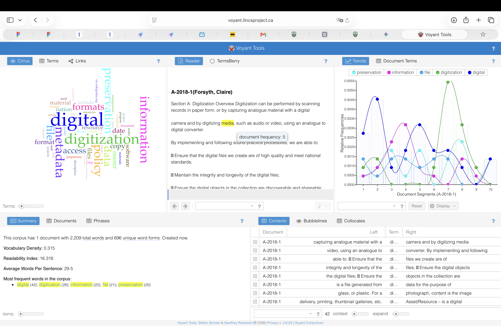

🩸 1. 实证开篇：波兰看守中心的九日抗争与话语抹除
研究之前的情况与遭遇抹消：在波兰受监管外国人中心（GCF/SOdC）的实际运作中，一名经历严重创伤与急性心理危机的年轻移民女性，其存在被完全封闭在戒备隔离区。在边防警卫撰写的 9 份官方备忘录中，这位女子的名字、国籍与遭遇历史被系统性彻底抹除——官方文件通篇使用波兰语屈折变格 umieszczona / umieszczonej / umieszczoną（“被拘留者/被安置者”）来代称她。在警卫标准化的规训口吻中，她因绝望而发生的应激求救被冷酷定性为“违反社会规范”，她撕开床垫、在窗上写下字迹的身体呼喊，被官方行政话语直接化约为“破坏设施与污染卫生”。
“5月20日：该名外国女性在走廊倾倒废水、撕扯门牌、向闸门投掷鸡蛋与番茄……5月22日：窗户上发现刻有‘Death to everyone always’字样。行政长官批示：‘当事人对洗窗命令报以大笑，责令警卫对其特殊监控。’——官方备忘录记录”
Voyant Tools 如何还原女子的创伤：通过将这 1,246 个词的官方语料导入 Voyant Tools，研究者利用上下文搭配网络（Collocates/Links）与变格词频矩阵（Corpus Collocates）穿透了单向度的官僚话语。计算分析揭示出，与“被拘留者”（umieszczona）高频强绑定的并非暴力，而是密集的空间与规训词汇——“水（woda）”、“门（drzwi）”、“垃圾（śmieci）”与“走廊（korytarz）”。Voyant 从统计学维度刺破了文本假面：证明所谓“不合规行为”本质上是一名被剥夺身份的人，在极度封闭的规训空间内，以自己的身体、日用品乃至排泄物为武器所进行的绝望求生与抵抗。

图 1：使用 Voyant Tools 解析波兰备忘录时呈现的词频、搭配网络与 KWIC 语境联动分析界面